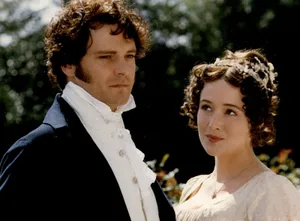

Pride and Prejudice, romantic novel by Jane Austen, published anonymously in three volumes in 1813. A classic of English literature, written with incisive wit and superb character delineation, it centers on the burgeoning relationship between Elizabeth Bennet, the daughter of a country gentleman, and Fitzwilliam Darcy, a rich aristocratic landowner. Upon publication, Pride and Prejudice was well received by critics and readers. The first edition sold out within the first year, and it never went out of print.
Pride and Prejudice is set in rural England at the turn of the 19th century, and it follows the Bennet family, which includes five very different sisters. The eldest, Jane, is sweet-tempered and modest. She is her sister Elizabeth’s confidant and friend. Elizabeth, the heroine of the novel, is intelligent and high-spirited. She shares her father’s distaste for the conventional views of society as to the importance of wealth and rank. The third daughter, Mary, is plain, bookish, and pompous, while Lydia and Kitty, the two youngest, are flighty and immature.